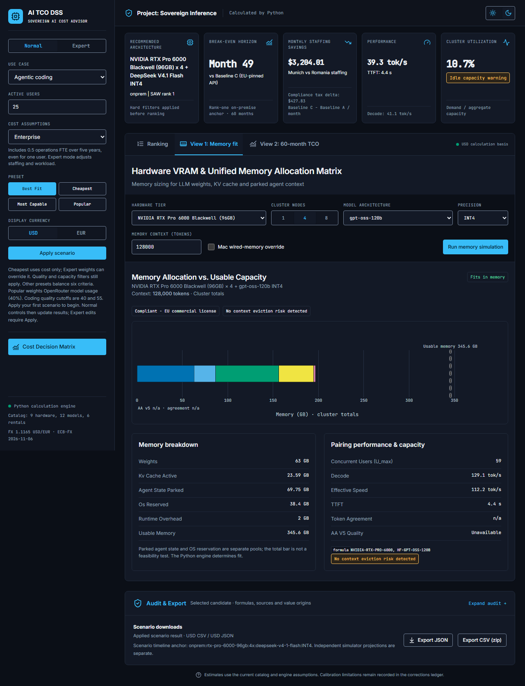
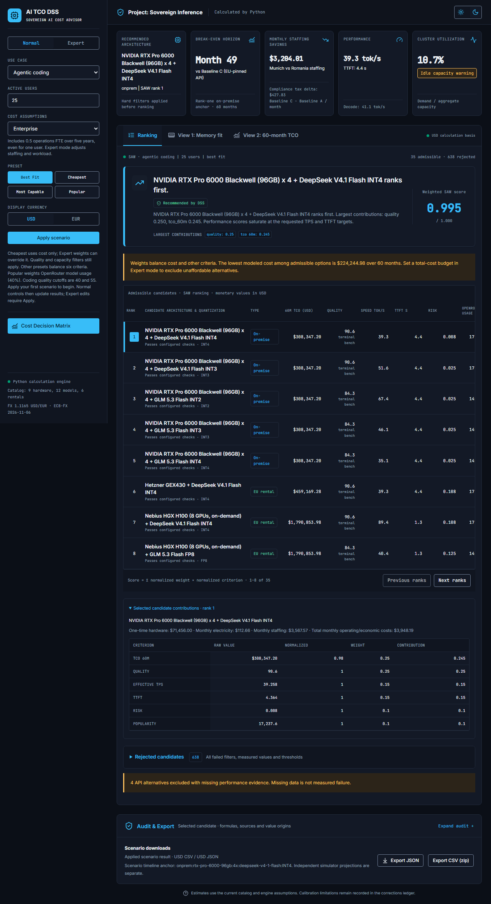

Canonical Stitch light TCO

Implemented light TCO

Canonical Stitch dark TCO

Implemented dark TCO

Light memory fit

Dark memory fit

Light ranking

Dark ranking

2026-11-08 / Chromium DPR 1 / 1280 CSS px desktop. Review, validation and intentional differences.

